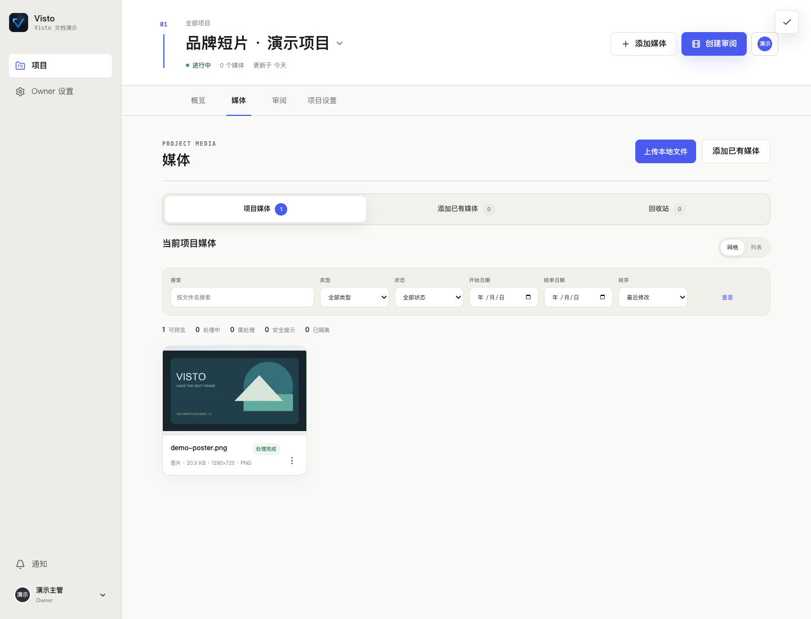

文档首页/项目与素材
上传、搜索与整理素材
谁来操作： 有相应项目上传权限的成员。入口： 进入具体项目 → 媒体。


上传一个或多个文件
- 确认顶部项目名。
- 选择“上传本地文件”，从自己电脑选图片或视频。
- 在上传任务面板查看等待、传输进度、完成或失败。
- 失败时先看原因，按需要重新上传；未完成前不要关闭浏览器。
- 传输完成后等待后台媒体识别与预览处理，再打开素材验证。
浏览器上传把选中的文件复制到项目授权的存储。已存在于服务器的文件不会仅因打开页面而被扫描导入；日常上传应始终在项目内完成。
分清三类状态
| 状态层 | 表示什么 | 你应该做什么 |
|---|---|---|
| 上传进度 | 文件是否传完 | 等待完成或修复传输问题 |
| 上传安全检查 | 文件是否可继续参与协作 | 处理隔离、拒绝或扫描提示 |
| 媒体处理 | 预览、识别及增强任务是否完成 | 等处理结束，失败时查看任务详情 |
“上传完成”与“可预览”是不同阶段。源文件在库中但预览失败时，不要先删除重传，先检查运行时和具体任务。
搜索和筛选
按文件名搜索，再用类型、处理状态、开始 / 结束日期和排序缩小范围。找不到刚上传文件时，先点“重置”，确认当前项目、页码和筛选条件，再检查上传结果。
网格适合看画面，列表适合看文件信息。打开素材详情可以重命名、查看预览、元信息和版本历史。
加入已有媒体、复制和剪切
“添加已有媒体”只展示你有权使用的已有媒体，不是任意主机扫描入口。将资产加入另一个项目前，检查目标项目权限和存储要求。
详情中的“复制 / 剪切”是跨项目操作；不要把它等同于已经在另一个物理磁盘复制了完整文件。按页面结果检查目标项目可见性和媒体可读性。“从当前项目移除”进入项目回收站，恢复步骤见“归档与删除”。
命名约定建议
同一作品使用一个资产名称，如“品牌短片主片”；版本保留 V1、V2 的编号。横版、竖版或语言版本若分别交付，可以用不同资产，避免仅靠“最终版 / 最终版2 / 真最终版”区分。